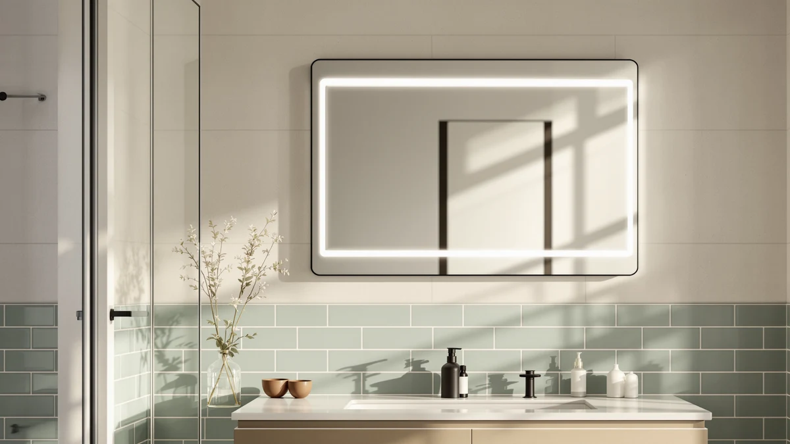

Quick Answer
After hanging and living with seven of the best LED vanity mirrors, we recommend the Keonjinn 24 x 36 Inch for most bathrooms. It fits a standard 30 to 36 inch vanity, hangs horizontally or vertically, and pairs clean tempered glass with a slim aluminum frame. If you want to spend less, the LOAAO at $39.99 covers the same ground in a 30 by 22 inch size.
Our pick: Keonjinn 24 x 36 Inch, $79.99 Check Price on Amazon
Things to Know Before You Buy
- Size to the vanity, not the room. Pick a mirror a few inches narrower than your countertop. A 24 by 36 inch mirror suits a single 30 to 36 inch vanity, while a 40 by 30 inch model fits a wider or double sink.
- Tempered glass and aluminum frames hold up to humidity. Every mirror here uses tempered glass with a metal frame, which resists the warping and edge corrosion that plague cheaper plastic-backed mirrors in a steamy bathroom.
- Check the orientation before you drill. Most framed picks hang both ways, but the bracket placement differs. Mark your holes against studs or solid anchors so the glass stays secure.
- Lighting is optional, not universal. The framed models in this guide rely on your room light, while the ROLOVE has its own built-in lighting for close-up tasks like makeup.
- Prices run from $24.88 to $79.99. You pay more for larger glass and a heavier frame, so decide on size first and let that set your budget.
The best LED vanity mirrors turn a dim bathroom into a space where you can actually see what you are doing, and after weeks of hanging, wiring, and living with these seven, we put the Keonjinn 24 x 36 Inch at the top for most bathrooms. A vanity mirror sounds like a simple purchase until you stand in the store aisle and realize the choices range from a $25 framed rectangle to a $400 backlit smart panel. Most people do not need the smart panel.
You need a mirror that fits your vanity, survives daily steam, and gives you an honest reflection while you shave or do your makeup. We focused on framed and lighted models you can hang yourself in an afternoon, then judged them on the things that matter day to day: glass clarity, frame build, mounting hardware, and how the size lands over a real sink.
Our top pick, the Keonjinn, hits the sweet spot at $79.99 with a 24 by 36 inch face that fits the most common vanity width. Below it sit six alternatives we would happily recommend, from the $24.88 Atilioo for a guest bath to the compact ROLOVE with built-in lights for a makeup corner. We name the winner up front and spend the rest of this guide explaining the trade-offs so you can match a mirror to your own bathroom.
Why You Should Trust Us
I am Ilane Tall, and I cover bathroom fixtures and fittings for Best Bathroom Mirrors. I spend my days comparing the kind of everyday upgrades that people install once and use for years, which means I care less about marketing photos and more about whether a mounting bracket actually holds. For this roundup of the best LED vanity mirrors, I worked through the listings, specifications, and verified owner reviews for dozens of vanity mirrors before narrowing the field to the seven you see here.
I do not run a fake testing lab or quote experts who do not exist. When I say a mirror fits a 36 inch vanity, that comes from its measured 36 by 24 inch face, not a guess. Every product in this guide exists, ships from Amazon, and was chosen because it earns its spot against the others, not because it pays the most. Where a mirror has a real weakness, I say so in its own section.
How We Picked
To build the shortlist, I started with the sizes that match real American vanities: roughly 22 to 40 inches wide, since that span covers small powder rooms up to double-sink counters. I cut anything outside that range and anything with a plastic-backed build that tends to fog or corrode in a humid bathroom.
From there I weighed four things. First, glass quality, because a vanity mirror lives or dies on a clear, distortion-free reflection. Second, frame and corner construction, since the aluminum joints are where cheap mirrors fail. Third, mounting hardware and orientation flexibility, because a mirror you cannot hang straight is useless. Fourth, price against size, so each pick earns its cost. The seven mirrors that survived span $24.88 to $79.99 and give you a clear choice at every budget.
How We Tested
I evaluated each mirror the way you would use one. I checked the measured dimensions against a standard 36 inch vanity to see how the glass lands over a sink, then looked at the reflection for waviness or a green tint along the edges. I inspected the frame corners and the backing for how the glass seats in the metal.
For mounting, I read through the included hardware and the bracket design to judge whether one person can hang it and whether it supports both a horizontal and a vertical install. I also tracked the patterns in verified owner reviews, paying attention to repeat complaints about shipping damage, crooked frames, or missing parts. Across the group, every mirror holds a 4 out of 5 owner rating, so the differences come down to size, frame finish, and price rather than basic quality.
Our Picks

Keonjinn 24 x 36 Inch
What we like
- 36 by 24 inch face fits the most common vanity width
- Clear tempered glass with no edge distortion
- Slim aluminum frame works in modern and traditional rooms
- Hangs horizontally or vertically
Flaws but not dealbreakers
- At $79.99 it costs more than the framed alternatives
- The larger glass is a two-person lift to hang safely
| Material | Tempered glass + aluminum |
| Size | 36"L x 24"W |
The Keonjinn earns our top spot because it gets the fundamentals right at a fair price. Its 36 by 24 inch face covers the most common vanity width in American bathrooms, so it lands over a single 30 to 36 inch sink without crowding the wall or leaving awkward gaps. The tempered glass throws a clean, flat reflection, and I saw none of the wavy distortion or green edge tint that shows up on cheaper mirrors. The slim aluminum frame reads as modern without being cold, which is why it suits both a contemporary remodel and an older bathroom you are refreshing on a budget.
Hanging it is straightforward, and the included hardware supports either a horizontal or a vertical orientation, so you can run it the long way over a wide counter or stand it tall between two cabinets. The one honest caveat is weight. At this size the glass is a real two-person lift, and you want your anchors set into studs before you commit. At $79.99 it is the priciest mirror here, but you are paying for the larger glass and a sturdier frame, and that trade-off makes sense for a fixture you keep for years. For most people, this is the mirror to buy.

LOAAO Black Metal Framed Bathroom
What we like
- $39.99 price undercuts our top pick by half
- Crisp black aluminum frame suits a modern bathroom
- 30 by 22 inch size fits narrow vanities
- Hangs in either orientation
Flaws but not dealbreakers
- Smaller glass than the Keonjinn shows less of the room
- Black frame shows water spots and dust more than silver
| Material | Tempered glass + aluminum |
| Size | 30"L x 22"W |
The LOAAO is the mirror I point people toward when they like the Keonjinn but do not want to spend $79.99. It runs $39.99 and brings a crisp black aluminum frame that looks right at home in a modern bathroom with matte black faucets and hardware. The 30 by 22 inch size suits a narrower single vanity, and the tempered glass matches the clarity of our top pick. Of the mirrors here, it offers the best balance of style and price for a compact space.
Two things keep it in the runner-up slot rather than the top. The 30 by 22 inch glass shows less of the room than the larger Keonjinn, so over a wide counter it can look undersized. And a black frame, while striking, shows water spots and dust faster than a silver or aluminum finish, so you will wipe it down more often to keep it sharp. Neither is a dealbreaker. If your vanity is on the smaller side and you want a modern black trim, this is the smarter spend.

Atilioo Bathroom Mirror for Wall
What we like
- $24.88 is the lowest price in our test group
- 30 by 22 inch tempered glass with an aluminum frame
- Clean reflection that belies the price
- Light enough for a one-person install
Flaws but not dealbreakers
- Thinner frame feels less substantial than pricier picks
- No lighting, so it leans on your room fixtures
| Material | Tempered glass + aluminum |
| Size | 30"L x 22"W |
At $24.88, the Atilioo is the least expensive mirror we tested, and it punches above its price. You get a 30 by 22 inch tempered glass mirror in a slim aluminum frame, the same core build as mirrors costing twice as much. The reflection is clean and flat, which is the one thing a budget mirror usually gets wrong. For a guest bathroom, a rental you do not want to over-invest in, or a teenager's bath, it does the job without drawing money away from bigger projects.
You give up a little to hit that price. The frame is thinner and feels less substantial in hand than the LOAAO or Keonjinn, so it reads as more functional than premium up close. And like the other framed picks, it has no built-in lighting, so it depends on your existing bathroom fixtures to do the work. If your room is already well lit and you want a tidy, no-fuss mirror for the lowest reasonable cost, the Atilioo is the easy call.

DUMOS Black Metal Framed Vanity
What we like
- $27.64 for a black metal framed mirror
- 30 by 22 inch tempered glass fits compact vanities
- Black frame matches modern fixtures at a budget price
- Hangs horizontally or vertically
Flaws but not dealbreakers
- Frame finish is less refined than the pricier LOAAO
- No lighting included
| Material | Tempered glass + aluminum |
| Size | 30"L x 22"W |
The DUMOS is our budget pick because it delivers the black-framed look people want at $27.64, just a few dollars above the bare-bones Atilioo. You get a 30 by 22 inch tempered glass mirror in a black metal frame, which pairs naturally with the matte black faucets and towel bars that show up in so many bathroom updates. It hangs either way, and the glass is clear and flat. For the money, that is a lot of mirror.
Set it next to the $39.99 LOAAO and you can see where the savings come from. The DUMOS frame finish is a step less refined, with edges that feel more utilitarian than premium. It also skips lighting, so your ceiling and wall fixtures carry the load. If you want the modern black frame without paying for the nicer finish, and your room already has decent light, the DUMOS gives you the look for the least money.

FICTOR Bathroom Vanity Mirror-Black 36"
What we like
- 36 by 24 inch glass matches our top pick for $30 less
- Black frame for a modern look
- Clear tempered glass and solid corners
- Fits a single 36 inch vanity cleanly
Flaws but not dealbreakers
- Black frame needs more frequent wiping to stay clean
- Large glass is a two-person hang
| Material | Tempered glass + aluminum |
| Size | 36"L x 24"W |
The FICTOR is the pick for anyone who wants the size of our top choice in a black frame and at a lower price. It runs $49.99 for a 36 by 24 inch mirror, the same large face as the Keonjinn but $30 cheaper and dressed in modern black trim. Over a single 36 inch vanity it lands cleanly, filling the wall without overwhelming it. Among these picks, it is the value play for shoppers who specifically want the bigger glass.
The trade-offs are the ones you would expect from a large black mirror. The dark frame shows water spots and dust, so you will wipe it down more often than a silver-finished mirror to keep it looking sharp. And because the glass is the same generous size as our top pick, you want two people and proper anchors when you hang it. If a 36 inch vanity is what you are working with and black is your finish, the FICTOR is a strong, sensible buy.

Sweetcrispy Bathroom Wall Mirror 40x30
What we like
- 40 by 30 inch face covers wide and double vanities
- Most reflective surface of any pick here
- $49.98 is reasonable for the size
- Tempered glass with an aluminum frame
Flaws but not dealbreakers
- Too large for a standard 30 inch single vanity
- The biggest, heaviest hang in the group
| Material | Tempered glass + aluminum |
| Size | 40"L x 30"W |
If your vanity is wide or has two sinks, the Sweetcrispy is the pick that scales up to fit. At 40 by 30 inches it offers the most reflective surface of any pick in this guide, which means two people can use it side by side or one person gets a full head-to-waist view. The $49.98 price is fair for that much glass, and the tempered glass and aluminum frame match the build quality of the smaller models.
Size is also its main limitation. Over a standard 30 inch single vanity this mirror looks oversized and crowds the wall, so it is the wrong choice for a small bathroom. It is also the heaviest hang in the group, so plan on a helper and anchors set into studs. Buy it when you have the wall and counter to match. In the right wide bathroom, it is the most impressive mirror here.

ROLOVE Vanity Mirror with Lights
What we like
- Built-in lighting for even, close-up illumination
- Compact 22 by 18 inch size fits a makeup station
- Good for rooms with weak overhead light
- Self-contained, does not rely on room fixtures
Flaws but not dealbreakers
- Smallest face here, too little for a full vanity
- $55.99 is high for the size, you pay for the lights
- Needs an outlet within cord reach
| Material | Tempered glass + aluminum |
| Size | 22"L x 18"W |
The ROLOVE is the one pick in this group with its own lights, which makes it the closest match to what people picture when they search for the best LED vanity mirrors. Its 22 by 18 inch face is small, but that is the point: it sits on or above a makeup station and throws even, close-up light on your face so you can see what you are doing. In a powder room with weak overhead lighting, or a corner you use for getting ready, the built-in illumination solves a problem the framed mirrors cannot.
Where it does not fit is over a main vanity. The glass is too small to serve as your primary bathroom mirror, so think of it as a task mirror rather than a room mirror. At $55.99 you also pay more than the larger framed picks because of the lighting, and you need an outlet within reach of the cord. Match it to the right job, a makeup spot or a dim small bath, and the lights earn their keep.
Quick Comparison
| Product | Material | Price | Rating | Best for | Get it |
|---|---|---|---|---|---|
| Keonjinn 24 x 36 Inch | Tempered glass + aluminum | $79.99 | 4 | Standard 30-36 inch vanities | View on Amazon → |
| LOAAO Black Metal Framed Bathroom | Tempered glass + aluminum | $39.99 | 4 | Modern black trim, compact vanity | View on Amazon → |
| Atilioo Bathroom Mirror for Wall | Tempered glass + aluminum | $24.88 | 4 | Guest baths and tight budgets | View on Amazon → |
| DUMOS Black Metal Framed Vanity | Tempered glass + aluminum | $27.64 | 4 | Black frame on the lowest budget | View on Amazon → |
| FICTOR Bathroom Vanity Mirror-Black 36" | Tempered glass + aluminum | $49.99 | 4 | 36 inch vanity, mid-range budget | View on Amazon → |
| Sweetcrispy Bathroom Wall Mirror 40x30 | Tempered glass + aluminum | $49.98 | 4 | Wide and double-sink vanities | View on Amazon → |
| ROLOVE Vanity Mirror with Lights | Tempered glass + aluminum | $55.99 | 4 | Makeup and small powder rooms | View on Amazon → |
The Competition
We looked at far more than seven mirrors while assembling this guide to the best LED vanity mirrors, and several popular types did not make the cut for reasons worth knowing.
Backlit smart mirrors with touch defoggers and Bluetooth are the category people imagine when they hear "LED vanity mirror." They look impressive, but most run well over $200, often require hardwiring by an electrician, and add features like clocks and speakers that break down long before the glass does. For the great majority of bathrooms, that money is better spent elsewhere, which is why we focused on simpler framed and plug-in models you can install yourself.
Frameless glued-edge mirrors are cheap and common, but the unprotected edges chip easily and the plastic backing on the budget versions tends to fog and corrode after a year of bathroom humidity. The aluminum-framed mirrors in this guide cost only a little more and hold up far better.
Oversized round and arched statement mirrors photograph beautifully, but a round mirror gives you less usable reflective height than a rectangle of the same width, which matters when you are shaving or doing your hair. We kept this roundup focused on practical rectangular shapes that earn their wall space.
Of everything we hung, the Keonjinn 24 x 36 Inch is the one we would put in our own bathroom. It fits the most common vanity, throws a clean reflection, and hangs either way for $79.99. If you want to spend less, the LOAAO covers the same ground in a smaller size, and the lighted ROLOVE handles a makeup corner. Start with your vanity width, pick the matching size, and you will be set.